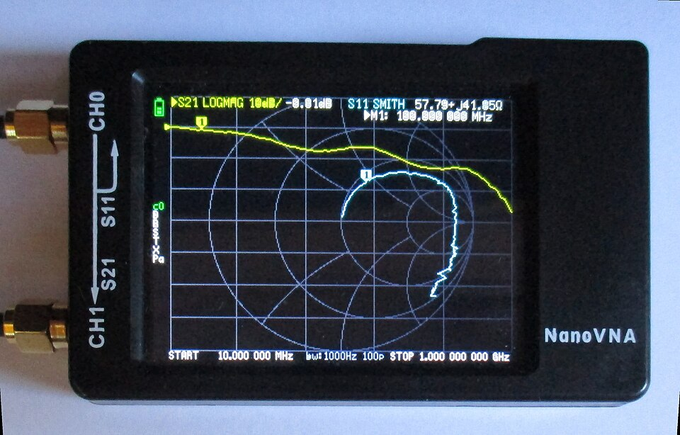
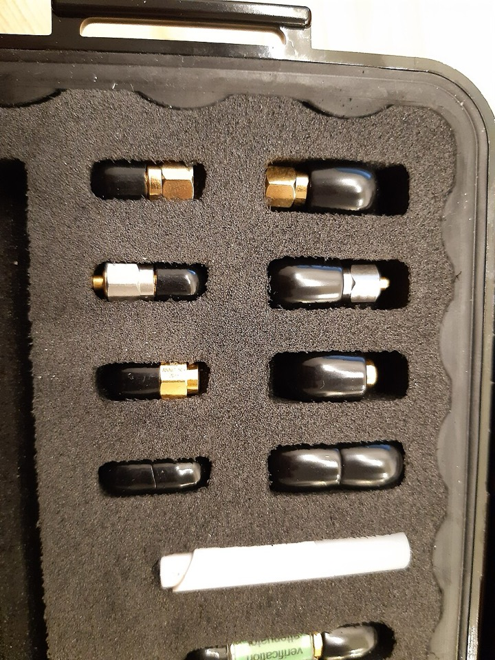

Calibrate a VNA and measure RF reflections
A good 50 Ω load appears to reflect too much signal. Move the reference plane to the end of the actual cable and prove the instrument with a known standard first.
A VNA such as a NanoVNA, a suitable test cable and matching open, short and 50 Ω load standards. Use only passive loads within the instrument’s ratings. Work through the numeric case if you do not have a VNA.
Tell the instrument ports and traces apart
S11 is the reflection coefficient seen looking into port 1. The magnitude display in dB is commonly zero for nearly total reflection and negative for lower reflection. Return loss uses the opposite sign. S21 describes forward transmission from port 1 to port 2 in a two-port measurement.

Photo by Martin Homuth-Rosemann, scaled for the course, with labels added. Original · CC BY-SA 4.0.


Photo by Elgull, scaled for the course. Original · CC BY-SA 4.0.

Calibrate at the connector you will use
- Choose a modest span over which the cable and standards are rated, such as 10–100 MHz for a suitable student kit. Select the S11 trace and note the cable configuration.
- Put the standards at the end of the actual test cable. In the instrument’s calibration menu, connect and measure open, short and load in the model’s sequence. Save and activate that calibration. Support the cable and use the correct connector type.
- Compare a second known load. An open should be near 0 dB magnitude and a suitable matched load should reflect far less. Avoid claiming accuracy beyond the instrument and standards. Recheck calibration if you change the cables or span.
Watch on YouTube · Pause on the calibration standards and identify the connector where each standard attaches. How to Calibrate a NanoVNA – Every Step Explained! · mr diyguy123.
NanoRFE calibration sequence and reference.
Make sense of return loss and mismatch
Reflected fraction of power = |Γ|²At S11 = −14 dB, |Γ| ≈ 0.20 and reflected power ≈ 4%. The corresponding return loss is 14 dB.
An ideal 75 Ω load on a 50 Ω system gives |Γ| = |(75 − 50)/(75 + 50)| = 0.20. An open and a short can have the same magnitude yet different phase. Check the Smith chart marker position or phase if you need to distinguish them.
Calibrate a second time at the instrument port. Add the same cable after calibration and compare the phase and the measured response at its far end. Cable loss and electrical length can change the answer. Return to the desired plane before the closing test.
Keep a measurement you can reproduce
Record the span, calibration type, reference plane, load or cable ID and marker readings. Save a plot or screen photo with one known standard and the unknown load. Describe the result with the units and sign used by the display.
T32 · RF transmission lines, antenna matching and link budget
T38 · Time series, bus layers and evidence quality